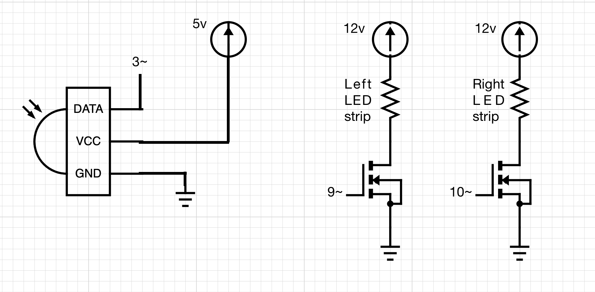
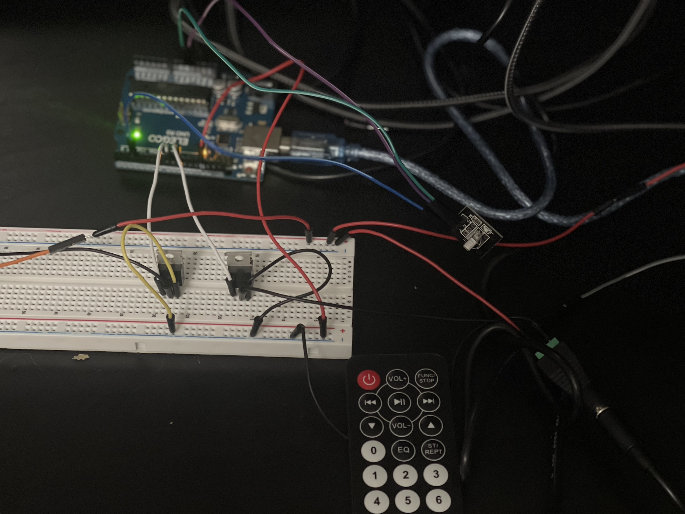
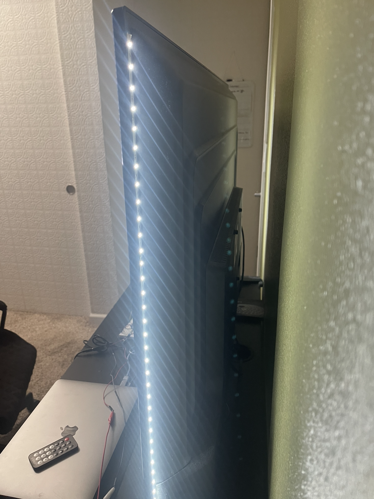
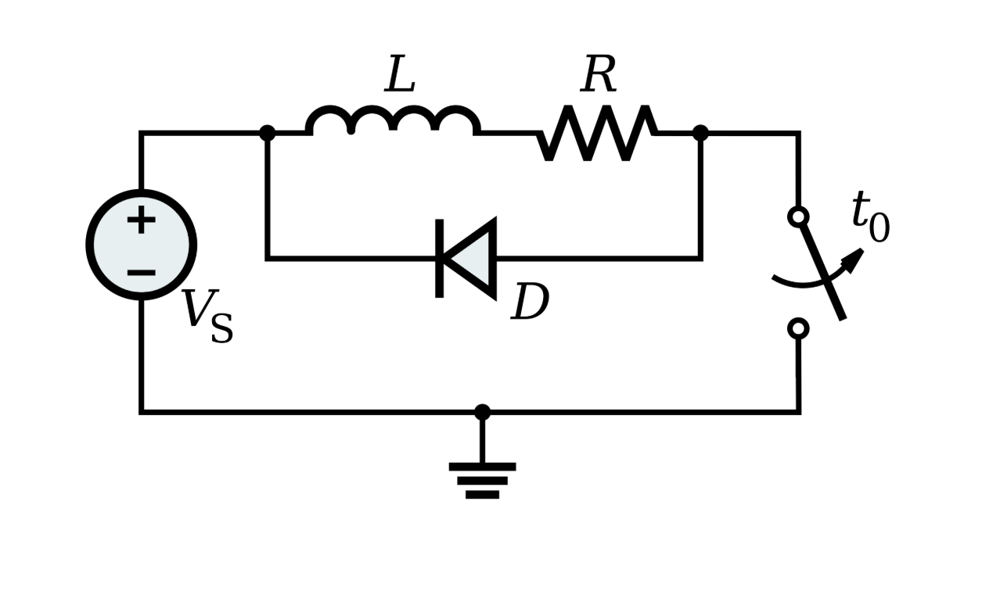

Circuit demo

Here is all the documentation for assignment 4!
Circuit schematic

Circuit image

Back of TV
Code Snippet
// TV Backlight --> i wanted to make a retro ping pong game where the left and the right LED strips light up everytime the pattle hits the ball (while the game is shown on the TV). I just didn't have time!
#include //include IR remote library
#define IR_RECEIVE_PIN 3 // set pin for IR receiver
uint32_t last_decodedRawData = 0; // store last received remote data as 32-bit integer
int left = 9; // the PWM pin the left LED strip is attached to
int right = 10; // the PWM pin the right LED strip is attached to
int current = 9; // the LED strip currently being "focused" on
int l_bright = 0; // how bright the left LED strip is
int r_bright = 0; // how bright the right LED strip is
void translateIR() // takes action based on IR code received
{
// Check if it is a repeat IR code
if (IrReceiver.decodedIRData.flags)
{
//set the current decodedRawData to the last decodedRawData
IrReceiver.decodedIRData.decodedRawData = last_decodedRawData;
}
//map the IR code to the remote keys fast forward and fast back
switch (IrReceiver.decodedIRData.decodedRawData)
{
case 0xBB44FF00: //if FAST BACK button pressed
Serial.println("FAST BACK"); //serial print button pressed
current = 9; // set current LED strip to left
break;
case 0xBC43FF00: //if FAST FORWARD button pressed
Serial.println("FAST FORWARD"); //serial print button pressed
current = 10; // set current LED strip to right
break;
case 0xF807FF00: //if DOWN button pressed
Serial.println("DOWN"); //serial print button pressed
if (current == 10) { // check if current LED strip is right
if ((r_bright - 5) >= 0) { // check if in range
r_bright -= 5; // decrease brightness
}
} else if (current == 9) { // check if current LED strip is left
if ((l_bright - 5) >= 0) { // check if in range
l_bright -= 5; // decrease brightness
}
}
break;
case 0xF609FF00: //if UP button pressed
Serial.println("UP"); //serial print button pressed
if (current == 10) { // check if current LED strip is right
if ((r_bright + 5) <= 255) { // check if in range
r_bright += 5; // increase brightness
}
} else if (current == 9) { // check if current LED strip is left
if ((l_bright + 5) <= 255) { // check if in range
l_bright += 5; // increase brightness
}
}
break;
default: // take default action when any other button is pressed
Serial.println(" other button "); // print to Serial
}// End Case
//store the last decodedRawData
last_decodedRawData = IrReceiver.decodedIRData.decodedRawData;
delay(50); // Do not get immediate repeat
}
// the setup routine runs once when you press reset:
void setup() {
// declare pin 9 to be an output:
Serial.begin(9600); // // Establish serial communication
IrReceiver.begin(IR_RECEIVE_PIN, ENABLE_LED_FEEDBACK); // Start the receiver
pinMode(left, OUTPUT); // set pinMode for left led strip (9)
pinMode(right, OUTPUT); // set pinMode for right led strip (10)
}
// the loop routine runs over and over again forever:
void loop() {
analogWrite(left, l_bright); // set brightness of left led strip to l_bright
analogWrite(right, r_bright); // set brightness of right led strip to r_bright
delay(30); // delay
if (IrReceiver.decode()) { // check if button pressed on remote
translateIR(); // call function translateIR() which checks for IR input and updates l_bright and r_bright
IrReceiver.resume(); // Enable receiving of the next value
}
}
Circuit demo
Question 1:This is the datasheet for the n-mosfet transistor. What is the absolute maximum amount of current between pins 2 and 3?
Between the drain and the source pin, the maximum amount of current is 80 A (Maximum Body Diode Forward Current)

Question 2: Draw a schematic for a circuit with using at least your arduino, a DC motor, a flyback diode, and capacitors between power and ground. Find parts with datasheets you could use for each of these schematic components.
Question 3:Here is the datasheet for the L293D chip: https://www.ti.com/product/L293DLinks to an external site.. Draw a schematic using at least your arduino, this chip, and two motors. Write (pseudo) code that shows how you would move the motors both forward, both back, then one forward one back, and one back then forward
int pin1 = 9
int pin2 = 10
int pin7 = 11